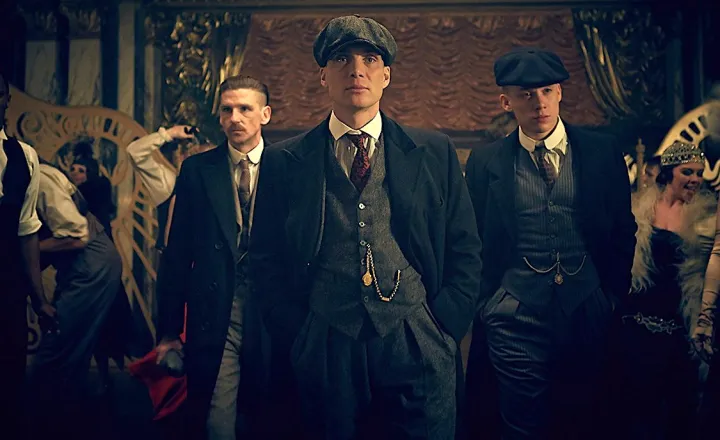
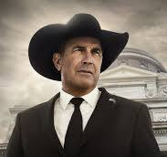
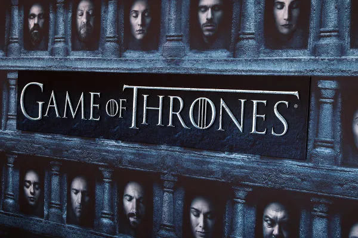
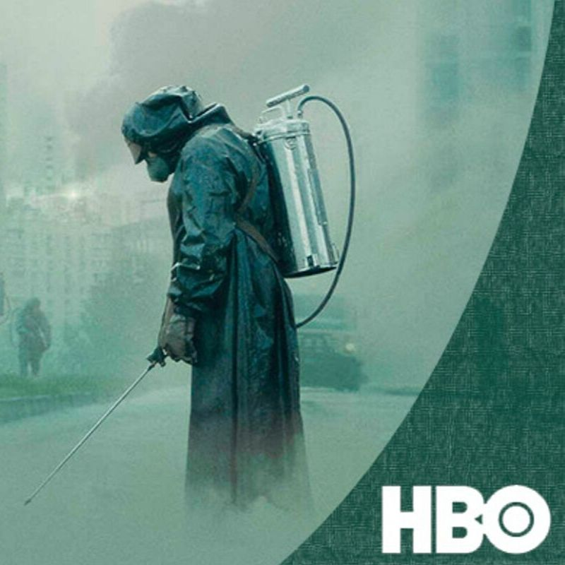

Os Peaky Blinders foram uma organização criminosa, originalmente de Birmingham, Inglaterra, que operava no território das Midlands Ocidentais, desde o final do século XIX até aos anos 30 do século XX
Yellowstone acompanhado a luta, por vezes violenta, de uma família do interior do estado de Montana, nos Estados Unidos, contra a reforma de sua propriedade. A família Dutton, comandada pelo patriarca John (Kevin Costner), tem um grande império latifundiário e se recusa a abrir mão de qualquer milímetro das terras que herdou.
Game of Thrones conta a história de um lugar onde uma força destruiu o equilíbrio das estações, há muito tempo. Em uma terra onde os verões podem durar vários anos e o inverno toda uma vida, as reivindicações e as forças sobrenaturais correm as portas do Reino dos Sete Reinos.
Chernobyl conta a história da explosão que aconteceu na Usina Nuclear que dá nome ao título. Em 1986, na Ucrânia, o acidente dizimou dezenas de pessoas e acabou por se tornar o maior desastre nuclear da história.
